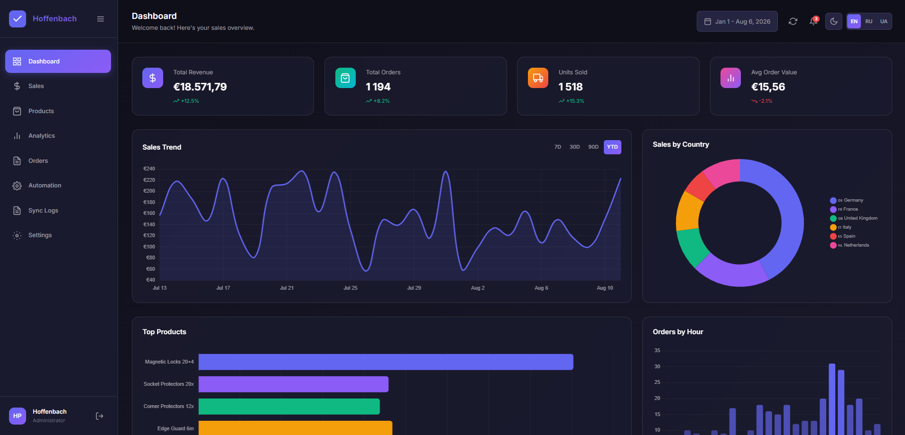
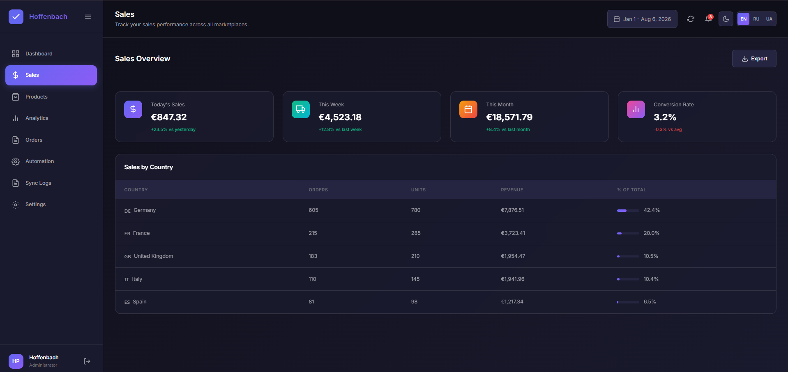
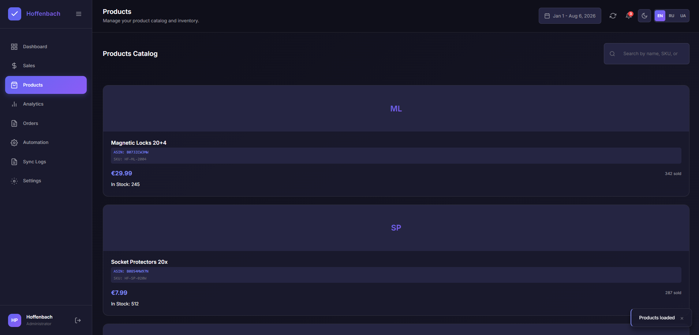
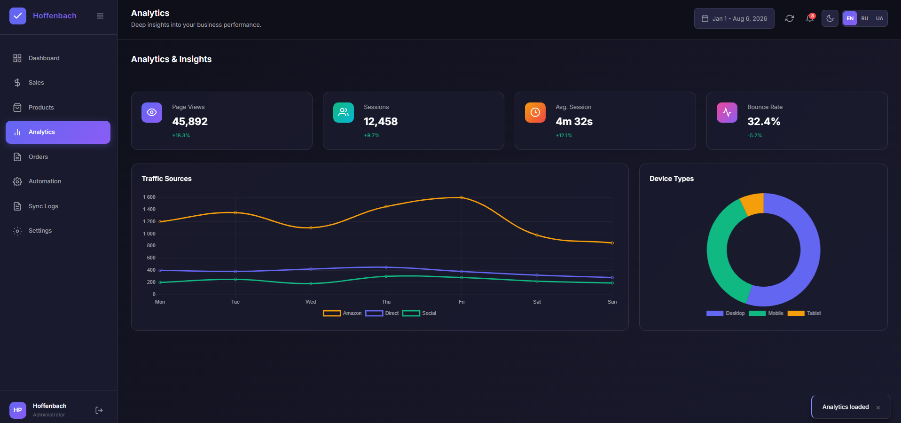
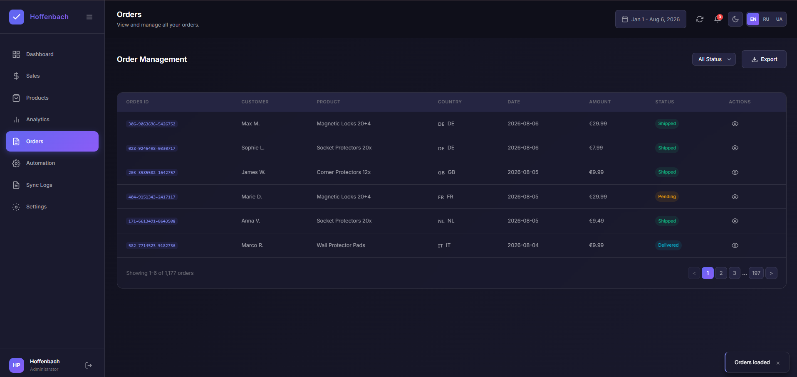
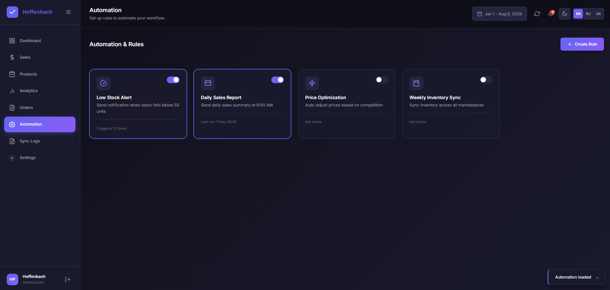
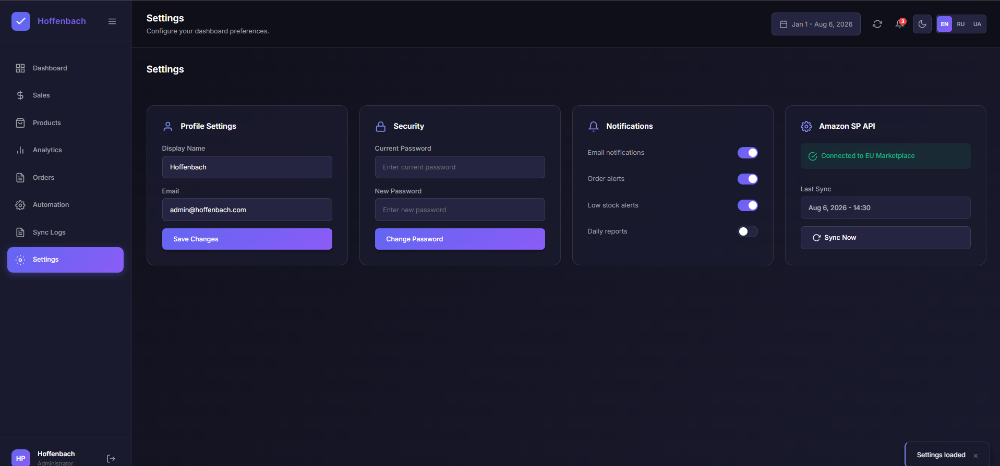

Wiki - Hoffenbach Analytics
1. Що це таке
Hoffenbach Analytics — це дашборд для аналізу продажів на Amazon EU. Показує ключові метрики по всіх маркетплейсах в одному місці.
Бренди
- Hoffenbach — основний бренд, магнітні замки та захисні аксесуари
- WunderHippo — другий бренд
- Два нових бренди — готуються до запуску
Країни
Amazon EU — 10 маркетплейсів: DE, UK, ES, IT, FR, NL, SE, BE, IE, PL.
Пріоритетні ринки: Німеччина (найбільший оборот), UK, Іспанія.

2. Навіщо потрібен
Що дашборд закриває
- Скільки продали сьогодні/цього тижня/місяця
- Яка виручка по кожній країні
- Які товари продаються найкраще
- Скільки залишилось на складі
- Статус замовлень
- Активність по годинах
Чого дашборд НЕ робить
- Не рахує маржу та собівартість (COGS)
- Не показує рекламні метрики (ACOS, PPC)
- Не керує інвентарем (тільки показує залишки)
- Не інтегрується з бухгалтерією
- Не замінює Seller Central
Важливо
Дашборд — це візуалізація даних з Amazon. Для повного аналізу прибутковості використовуйте спеціалізовані інструменти або ручний розрахунок.
3. Кому і коли пригодиться
Аккаунт-менеджери
Dashboard, Sales, Products — щодня вранці перевіряти вчорашні продажі та залишки
Логістика
Products — двічі на тиждень перевіряти Low Stock, планувати поповнення
Бухгалтерія
Sales, Orders — раз на місяць для звірки виручки по країнах
PPC-менеджер
Analytics — для аналізу трафіку та конверсій, порівняння з рекламними кампаніями
| Роль | Вкладки | Частота |
|---|---|---|
| Аккаунт-менеджери | Dashboard, Sales, Products | Щодня |
| Логістика | Products | 2 рази/тиждень |
| Бухгалтерія | Sales, Orders | 1 раз/місяць |
| PPC-менеджер | Analytics | За потреби |
4. Як влаштований
Звідки дані
- Amazon SP-API — основне джерело: замовлення, продажі, інвентар
- Amazon Reports — звіти для детального аналізу
Шлях даних
- Amazon SP-API віддає дані через EU endpoint
- Дані зберігаються локально
- Dashboard відображає актуальні метрики
- Sync Logs фіксує кожну синхронізацію
Зараз
SP-API не активовано. Дашборд працює з тестовими даними. Після підключення API дані оновлюватимуться автоматично.
Технічний стек
- Frontend: HTML, CSS, JavaScript (vanilla)
- Графіки: Chart.js
- Хостинг: GitHub Pages
- API: Amazon SP-API (EU endpoint), планується
5. Dashboard
Головна сторінка з оглядом ключових метрик.
Елементи
KPI-картки (вгорі)
| Картка | Що показує |
|---|---|
| Total Revenue | Загальна виручка за період |
| Total Orders | Кількість замовлень |
| Units Sold | Продано одиниць товару |
| Avg Order Value | Середній чек |
Графіки
- Sales Trend — динаміка виручки по днях. Перемикачі: 7D, 30D, 90D, YTD
- Sales by Country — розподіл виручки по країнах (кругова діаграма)
- Top Products — найпопулярніші товари по виручці
- Orders by Hour — розподіл замовлень по годинах доби
Як вибрати період
- Натисніть кнопку з датами у хедері (наприклад, "Jan 1 - Aug 6, 2026")
- Виберіть пресет: Last 7 days, Last 30 days, Last 90 days, Year to Date, All Time
- Або задайте власний діапазон у полях Custom Range і натисніть Apply
Sales
Детальна статистика продажів по країнах.

KPI-картки
| Картка | Що показує |
|---|---|
| Today's Sales | Виручка за сьогодні |
| This Week | Виручка за поточний тиждень |
| This Month | Виручка за поточний місяць |
| Conversion Rate | Конверсія (перегляд → покупка) |
Таблиця Sales by Country
Колонки:
- COUNTRY — прапор та назва країни
- ORDERS — кількість замовлень
- UNITS — продано одиниць
- REVENUE — виручка в євро
- % OF TOTAL — частка в загальній виручці (прогрес-бар)
Експорт
Кнопка Export — завантажує звіт (функціонал готується).
Products
Каталог товарів з пошуком та залишками.

Пошук
Поле "Search by name, SKU, or ASIN..." — фільтрує картки в реальному часі.
Можна шукати за:
- Назвою товару (Magnetic Locks 20+4)
- SKU (HF-ML-2004)
- ASIN (B07JZCWJMW)
Картка товару
- Плейсхолдер — абревіатура (ML, SP, CP...)
- Назва — Magnetic Locks 20+4
- ASIN — унікальний ідентифікатор Amazon
- SKU — внутрішній артикул
- Ціна — поточна ціна продажу
- Продано — кількість за період (342 sold)
- Залишок — In Stock: 245 або Low Stock: 42
Low Stock
Червоний індикатор означає, що залишок менше 50 одиниць. Потрібно планувати поповнення.
Analytics
Аналітика трафіку та поведінки покупців.

KPI-картки
| Картка | Що показує |
|---|---|
| Page Views | Кількість переглядів лістингів |
| Sessions | Кількість сесій (унікальні відвідувачі) |
| Avg. Session | Середня тривалість сесії |
| Bounce Rate | Відсоток відмов |
Графіки
- Traffic Sources — джерела трафіку: Amazon, Direct, Social (по днях тижня)
- Device Types — розподіл по пристроях: Desktop, Mobile, Tablet
Orders
Список усіх замовлень з фільтрацією.

Фільтр статусу
Dropdown "All Status" — фільтрує замовлення:
- All — всі замовлення
- Shipped — відправлені
- Pending — очікують обробки
- Delivered — доставлені
Колонки таблиці
| Колонка | Опис |
|---|---|
| ORDER ID | Номер замовлення Amazon |
| CUSTOMER | Ім'я покупця |
| PRODUCT | Назва товару |
| COUNTRY | Країна (прапор + код) |
| DATE | Дата замовлення |
| AMOUNT | Сума замовлення |
| STATUS | Статус (бейдж) |
| ACTIONS | Кнопка перегляду |
Пагінація
Внизу сторінки: "Showing 1-6 of 1,177 orders" — перемикання між сторінками.
Automation
Налаштування автоматичних правил.

Доступні правила
| Правило | Опис | Статус |
|---|---|---|
| Low Stock Alert | Сповіщення коли залишок падає нижче 50 одиниць | Активне |
| Daily Sales Report | Щоденний звіт о 9:00 | Активне |
| Price Optimization | Автоматичне коригування цін | Неактивне |
| Weekly Inventory Sync | Синхронізація інвентарю по маркетплейсах | Неактивне |
Створення правила
Кнопка + Create Rule — функціонал готується.
Sync Logs
Журнал синхронізації з Amazon API.
KPI (вгорі)
- Total Syncs — загальна кількість синхронізацій
- Successful — успішні
- Failed — помилки
- Warnings — попередження
- Success Rate — відсоток успішних
Фільтри
- All Integrations — Amazon SP-API, Google Sheets
- All Status — Success, Error, Warning
- Last 7 Days — період
Таблиця логів
Колонки: Status, Timestamp, Integration, Action, Records, Duration, Details
Натискання на рядок відкриває детальну інформацію про синхронізацію.
Settings
Налаштування профілю та підключень.

Блоки налаштувань
Profile Settings
- Display Name — ім'я для відображення
- Email — email адреса
- Кнопка Save Changes
Security
- Current Password — поточний пароль
- New Password — новий пароль
- Кнопка Change Password
Notifications
- Email notifications — сповіщення на email
- Order alerts — сповіщення про нові замовлення
- Low stock alerts — сповіщення про низькі залишки
- Daily reports — щоденні звіти
Amazon SP API
- Статус підключення: "Connected to EU Marketplace"
- Last Sync — час останньої синхронізації
- Кнопка Sync Now — запустити синхронізацію вручну
6. Що означає кожний показник
| Показник | Як рахується | Джерело | Як читати |
|---|---|---|---|
| Total Revenue | Сума всіх продажів за період | Amazon SP-API | Загальна виручка без вирахування комісій |
| Total Orders | Кількість унікальних замовлень | Amazon SP-API | Одне замовлення може містити кілька товарів |
| Units Sold | Загальна кількість проданих одиниць | Amazon SP-API | Може бути більше ніж Orders |
| Avg Order Value | Total Revenue / Total Orders | Розрахунок | Середній чек покупця |
| % of Total | (Revenue країни / Total Revenue) * 100 | Розрахунок | Частка країни в загальній виручці |
| Conversion Rate | Orders / Sessions * 100 | Amazon Reports | Скільки відвідувачів купують |
| Page Views | Кількість переглядів лістингів | Amazon Reports | Один користувач може переглянути кілька разів |
| Sessions | Унікальні візити за 24 години | Amazon Reports | Один користувач = одна сесія на день |
| Bounce Rate | Сесії без дій / Всі сесії * 100 | Amazon Reports | Нижче = краще (люди залишаються) |
7. Що робити, якщо не працює
Дані не оновились
- Перевірте Sync Logs — чи пройшла остання синхронізація
- Натисніть кнопку оновлення у хедері (іконка стрілок)
- Перевірте Settings → Amazon SP API → Last Sync
- Якщо Last Sync старше 4 годин — зверніться до відповідального за автоматизацію
Цифри не сходяться з Seller Central
- Перевірте обраний період — можливо, різні діапазони дат
- Дашборд показує gross revenue (без комісій)
- Seller Central може показувати net revenue
- Різниця в часових поясах — дашборд в UTC
Сторінка порожня
- Оновіть сторінку (F5 або Ctrl+R)
- Очистіть кеш браузера
- Спробуйте інший браузер
- Перевірте консоль (F12 → Console) на помилки
Помилка синхронізації
- Відкрийте Sync Logs
- Знайдіть останній запис з помилкою (червоний)
- Натисніть на рядок для деталей
- Скопіюйте Error Code та Error Message
- Зверніться до відповідального за технічну підтримку
Контакти підтримки
Технічні питання: відповідальний за автоматизацію
Загальні питання: аккаунт-менеджер
8. Глосарій
| Термін | Розшифровка | Опис |
|---|---|---|
| ASIN | Amazon Standard Identification Number | Унікальний 10-символьний код товару на Amazon (B07JZCWJMW) |
| SKU | Stock Keeping Unit | Внутрішній артикул продавця (HF-ML-2004) |
| FBA | Fulfillment by Amazon | Товари зберігаються та відправляються зі складів Amazon |
| FBM | Fulfillment by Merchant | Продавець сам відправляє товари |
| SP-API | Selling Partner API | API Amazon для отримання даних про продажі |
| Referral Fee | — | Комісія Amazon за продаж (зазвичай 15%) |
| Parent ASIN | — | Головний ASIN для товарів з варіаціями (колір, розмір) |
| Child ASIN | — | Конкретна варіація товару (окремий колір) |
| YTD | Year to Date | З початку року до сьогодні |
| EU Marketplace | — | Європейський регіон Amazon (10 країн) |